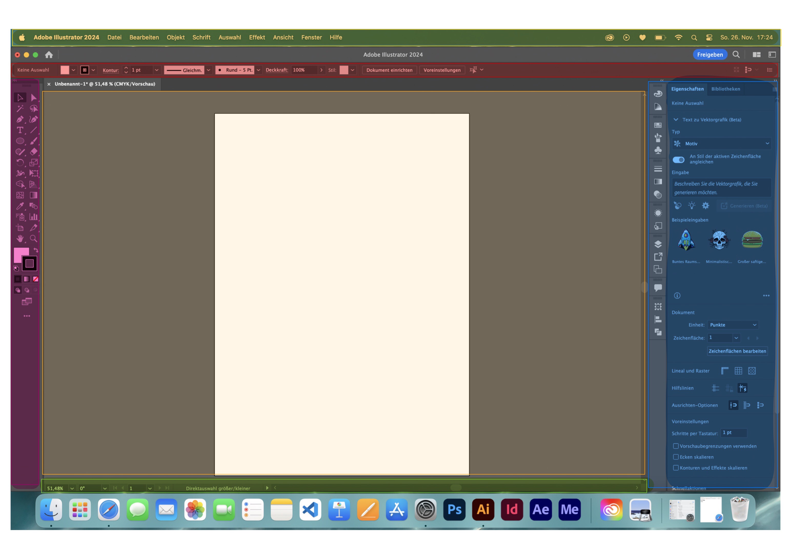

Tutorial - Grundlagen
- Was ist Adobe Illustrator?
- Aufbau von Illustrator
- Tools und Panels
1. Was ist Adobe Illustrator?
Adobe Illustrator ist eine Vector Drawing Software.
Ein Vector ist im Design ein Bild, in das du
unendlich reingezoomen kannst, ohne dass sich
die Qualität verändert.
2. Aufbau von Illustrator

- Header/Menu (gelb)
- Control bar (rot)
Je nachdem welches Objekt
gerade augewählt ist, werden dort deine Bearbeitungsmöglichkeiten
angezeigt.
- Toolbar (violett)
Hier sind alle Tools aufgelistet.
Hat ein Tool einen kleinen Punkt in der Ecke, kannst
du es anklicken und es werden ähnliche Tools geöffnet.
TIPP: Wenn du die Maus über ein Tool hälst, wird seine
Funktion anhand eines kleinen Videos erklärt.
- Panels (blau)
Hier findest du Aktionen wie
zum Beispiel das Auwählen der Farbe oder dem Zusammenfügen
von Formen.
TIPP: Im Header unter Window findest du
weitere Panels
- Status Bar (grün)
Hier findest du Infos, wie zum Beispiel
das Zoom-Level.
- Artboard (orange)
Dies ist deine Leinwand. Hier
kannst du deiner Kreativität freien Lauf lassen.
3. Tools und Panels
Nun die wichtigsten Tools und Panels im Überblick:
Quellen
Hier ist alles noch einmal in einem 10 min Video erklärt:
klick here